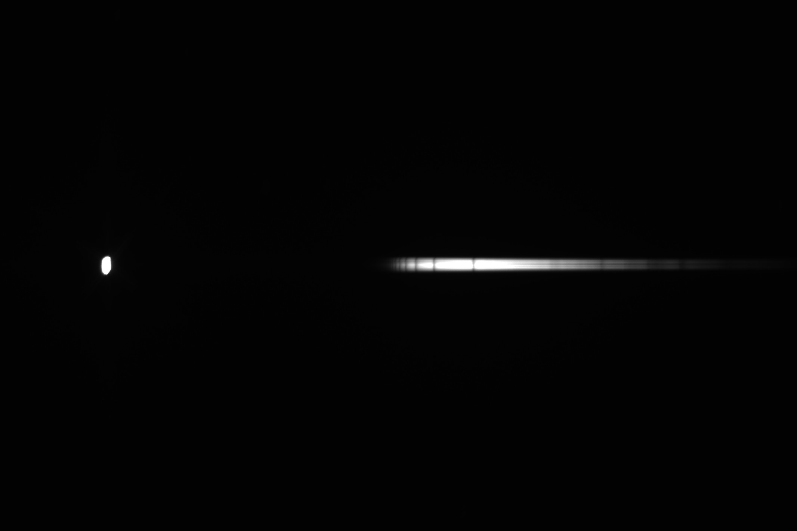
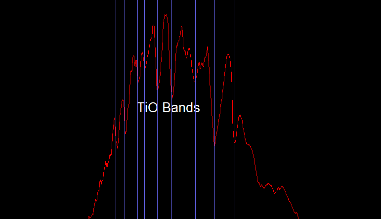

Mahesh Kumar
Saravanan
I study how objects move through space and design the trajectories that get them where they need to go and perform numerical simulations to analyse fluid flows and structural components. This is a running record of the projects, models, and problems I've worked through.
About
I'm a Dual Degree student in Aerospace Engineering at IIT Madras, focused on astrodynamics, and numerical analysis. My current area of interest includes both orbital mechanics, and numerical methods to perform analysis of structures and fluids
Most of the projects below come out of coursework and topics I've studied, extended into simulations and small tools I build on my own to test the ideas further — that mix of formal learning and self-driven tinkering is how I like to work.
Projects
5 selectedAn interactive orbital mechanics toolkit built in Python and Streamlit, covering the full workflow from raw physics to a flyable orbit: propagating a 2D orbit from initial conditions, visualizing the full 3D orbit from classical orbital elements, and planning maneuvers by applying a velocity change (Δv) to a spacecraft's state vector and seeing the resulting orbit update.
Modeled a finite wing's spanwise lift distribution using Prandtl's Lifting Line Theory, including the effect of aileron deflection via Thin Airfoil Theory corrections. Computed total lift and hub moment by integrating the lift distribution with three different numerical schemes: trapezoidal rule, Gauss-Legendre, and Clenshaw-Curtis quadrature, comparing convergence behavior, then solved inversely for the aileron deflection needed to produce a target hub moment.
Built a data-driven Reduced Order Model (ROM) for real-time CPU thermal prediction. A full-order 2D transient heat conduction model (160×160 grid, Gaussian hotspots for cores/cache/iGPU) generates training snapshots, from which Proper Orthogonal Decomposition (POD) extracts the dominant modes; Operator Inference then learns the reduced-order dynamics from those modes. Compared Linear and Quadratic Operator Inference formulations for this linear system.
Team lab project (AS2070) characterizing the mechanical behavior of GFRP laminates through tensile and creep testing. Specimens were water-jet cut and tabbed, then tested on a UTM under displacement control to capture the full stress-strain curve, and separately cut specimen was loaded on a creep testing setup at constant stress and elevated temperature to view the primary, secondary, and tertiary creep behavior. My role covered dog-bone design and sample preparation, across a team of five.
Fabricated sharp tungsten probe tips for Scanning Tunneling Microscopy via electrochemical etching by building the setup and calibrating an AC-driven etching circuit (tungsten wire cathode, platinum electrode, ~2M NaOH electrolyte), then controlling current via a trim pod as the wire etched at the meniscus until the immersed tip separated. Verified tip geometry under both a 10× light microscope and a scanning electron microscope.
Now
Updated periodicallyEstimating spacecraft attitude from light curves, a research project under a professor at IIT Madras
Low-thrust optimal trajectory design for satellites equipped with all-electric propulsion, with URSC, ISRO
Leadership
College rolesStar Spectroscopy
Amateur observationsI capture and analyze stellar spectra as a hobby, using Star Analyser 100 diffraction grating and an 8-inch Newtonian Reflector telescope to identify absorption lines and classify stars by their spectral type.

This raw 2D spectrum belongs to an A type star which shows the Hydrogen Balmer transition lines

This analysed 1D spectrum belongs to a M type star which shows the Titanium Oxide transition lines